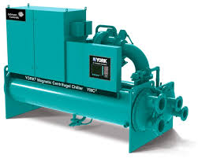

Tuplivoy nasos chiller gaz va toplipol tizimlarida ishlatiladigan kuchli uskunalardan biridir. Bu model 500 nasos yuqori samaradorlikka ega bo‘lib, isitish va sovutish tizimlarida keng qo‘llaniladi.
Agar siz gaz tizimi yoki toplipol tizimi uchun ishonchli nasos qidirayotgan bo‘lsangiz, tuplivoy nasos chiller eng yaxshi tanlov hisoblanadi.
Ushbu nasos sanoat va uy tizimlari uchun mos keladi va uzoq muddat xizmat qiladi.
Buyurtma berish